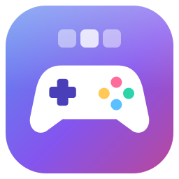

| Ctrl+T | домашний экран |
| Ctrl+W | закрыть вкладку |
| Ctrl+Tab | следующая вкладка (с Shift - предыдущая) |
| Ctrl+1…9 | вкладка по номеру, 9 - последняя |
| F11 | игра на весь экран, Esc - обратно |
| F5, Ctrl+R | начать игру заново (после вопроса); ещё - правой кнопкой по вкладке |
Рекорды и сохранения выбранной игры будут стёрты. Остальные игры это не затронет.
Игры в одном окне: у каждой своя вкладка и своё хранилище. Всё работает без интернета.
Игры - фан-концепты, не связаны с правообладателями. Лицензия MIT.
«» несколько раз подряд упала при запуске, поэтому приложение больше не перезапускает её само.